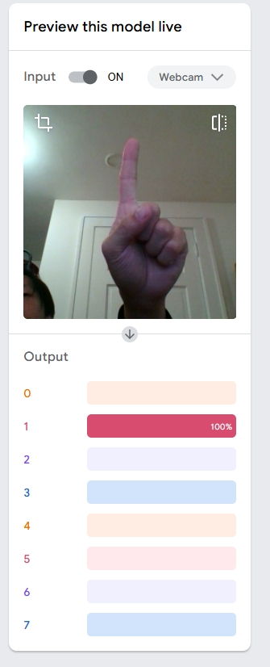

Project Objectives
In this project, we are officially exposed to machine learning. We will use the machine learning algorithm provided by Teachable Machine to train, and combine it with Buolawmini's book to complete this experimental report and thinking.
Project Scope
Classification:Hand Posture and Music
Range: 7 Posture
Item List:Do, Re, Mi, Fa, So, La, Ti
Image Samples: over 400 of each hand posture
Process
Before the Test
Because both of us encountered issue using the CAMERAs, one of our group member ordered a BRAND NEW laptop online to use the CAMERA. We really appreciate this course which help us buying a new laptop with super HD CAMERA.
TEST: Play Music With Your Hands
In this test, we decided to play music just with our own hands, I mean, literally. First of all, we trained the model to identify different hand signals(Which is not standard hand singal) and connect them to 1-7. Then we extracted do re mi fa so ra shi so from a piano video as our "key"s. We make them to several single mp4 file. If the model detect certain hand singal, it will play the scale once. We set 1 second common interval to make it play scale every 1 second
As you may know, playing music in this way require high precision. We tried 100 sample to train each hand singal but it turned out to be not precise. But when we increase the number of sample to 400 each, the problem could be solved 90%. I think it almost reach the limit of this browser-based model because the webpage almost crashed while preparing the data but managed to make it.
As I mentioned above, it solve the 90% of the problem. It still make mistake so we have to put our hands really close to the camera and try our best to maintain the same hand signal in training set. Here is a example clip of litte star we made. We also deployed this in this page, you can try it yourself.
Project Statement
Exploring Machine Learning Applications and Ethical Considerations Inspired by Joy Buolamwini's "Unmasking AI"
In our recent group project, we delved into the fundamentals of machine learning by undertaking a series of tasks that included image classification, sound classification, and an advanced challenge of mapping hand gestures to musical notes to perform a song. This project not only allowed us to apply theoretical knowledge in practical scenarios but also prompted us to reflect on the broader implications of artificial intelligence (AI) in society.
Inspired by Joy Buolamwini's book Unmasking AI: My Mission to Protect What Is Human in a World of Machines, we aimed to understand the ethical considerations surrounding AI, particularly issues of bias, fairness, and inclusivity. Through the lens of our project, we directly engaged with challenges described by Buolamwini—ensuring fairness and accuracy while recognizing hidden biases in datasets.
Project Overview
1. Image Classification: We trained a machine learning model to recognize and classify images of basic tools—hammer, pliers, and screwdriver. Using a dataset of labeled images, we employed a convolutional neural network (CNN) to learn distinguishing features and achieve accurate classifications. We started with a small dataset and iteratively expanded it, incorporating diverse samples to increase model robustness. For instance, we captured images under varying lighting conditions and angles, reflecting real-world scenarios.
2. Sound Classification: We developed a model to differentiate between distinct sounds: whistling, finger snapping, and clapping. By processing audio samples and extracting features such as frequency and amplitude, the model utilized recurrent neural networks (RNNs) to handle the temporal nature of sound data. This task posed unique challenges, such as ensuring background noise did not interfere with classification accuracy. To address this, we recorded "background noise" as a separate class and used it during training to improve the model's performance.
3. Hand Gesture Recognition and Musical Mapping: The most challenging task involved training a model to recognize specific hand gestures and map them to musical notes. By capturing images of various gestures and associating each with a corresponding note, we enabled the model to interpret real-time hand movements and produce a melody. This process required extensive data collection, with hundreds of samples for each gesture, and careful tuning of the model to minimize errors. While the model achieved a high level of accuracy, some limitations remained, especially in distinguishing similar gestures.
Methodologies
Data Collection and Preprocessing: For each task, we gathered datasets that were representative and diverse. For image classification, we took photographs of tools under different lighting conditions and orientations. For sound classification, we recorded audio samples in various environments, ensuring that ambient noise was considered. For hand gesture recognition, we captured images of gestures made by individuals with varying hand sizes, skin tones, and accessories.
Model Training: We utilized popular machine learning frameworks such as TensorFlow and Keras. For image classification, CNNs were chosen due to their effectiveness in visual pattern recognition. For sound classification, RNNs and Long Short-Term Memory (LSTM) networks were employed to manage sequential data. The hand gesture model leveraged a combination of techniques, including data augmentation, to enhance its ability to generalize.
Validation and Testing: We split our datasets into training and testing sets, using techniques like cross-validation to assess model performance and prevent overfitting. This step was critical in identifying areas where the models struggled and required further refinement.
Integration of Ethical Considerations
Joy Buolamwini's Unmasking AI emphasizes the concept of the "coded gaze," which refers to the biases embedded within AI systems, often reflecting the prejudices of their creators and the data they are trained on. This notion resonated with us and influenced several aspects of our project:
1. Data Bias Awareness: Recognizing that biased data leads to biased models, we scrutinized our datasets for diversity. For example, in the hand gesture recognition task, we included images of hands with different skin tones, sizes, and accessories (like rings or bracelets) to prevent the model from underperforming on certain demographics. Similarly, for sound classification, we ensured that recordings were made in both quiet and noisy environments to account for different real-world conditions.
2. Fairness in Model Performance: We monitored the model's accuracy across different subsets of data to identify any disparities in performance. For instance, during the image classification task, we found that the model initially struggled to distinguish between pliers and screwdrivers when the lighting was dim. This observation led us to expand our dataset and include more challenging examples, which ultimately improved the model's robustness.
3. Inclusivity in Design: We considered the accessibility of our system. By enabling music to be played through gestures, we opened possibilities for individuals who may not have the ability to play traditional instruments. This aspect of our project highlighted the potential for AI to empower users in unique and meaningful ways, aligning with Buolamwini's vision of ethical and inclusive technology.
4. Reflection on Societal Impact: Beyond the technical details, our project served as a reminder of the broader implications of AI. The biases and limitations we encountered in our models echoed the challenges faced by real-world systems, particularly in areas like facial recognition and automated decision-making. These reflections reinforced the importance of ethical considerations in every stage of AI development.
Challenges and Reflections
Despite our best efforts, we encountered several challenges that underscored the complexity of developing fair and accurate AI systems:
Addressing Unconscious Bias: Despite our efforts to create diverse datasets, we found that certain biases persisted. For example, the hand gesture model initially struggled with darker skin tones, echoing Buolamwini's experiences with facial recognition technologies. This highlighted the pervasive nature of bias in AI and underscored the importance of continuous vigilance.
Ethical Data Collection: We grappled with questions about consent and privacy, particularly when capturing images and sounds that could be personally identifiable. This led us to implement strict protocols for data handling and to anonymize data where possible. While this added complexity to the project, it was a necessary step in ensuring ethical practices.
Limitations of AI: Our project reinforced the understanding that AI models are only as good as the data and assumptions they are built upon. This aligns with Buolamwini's assertion that AI reflects both the aspirations and limitations of its creators. The process of refining our models served as a humbling reminder of the challenges inherent in developing fair and effective AI systems.
Test Model
Ready to try our model for yourself? Jsut follow our process and have Fun!